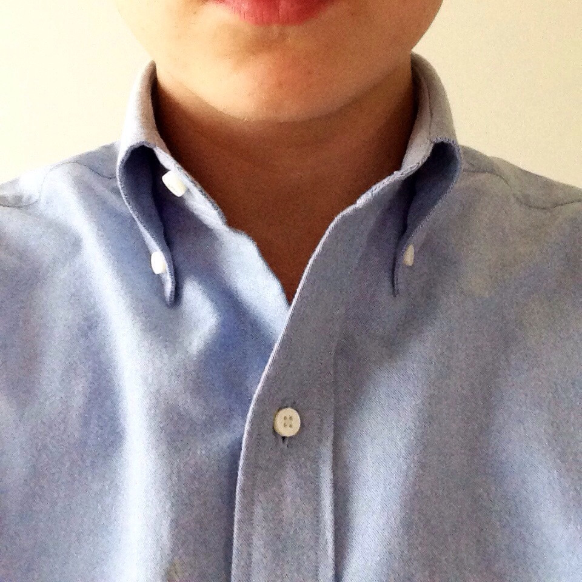

| Home | Shirting | Trousers/Bottoms | Footwear |
|---|
Oxford Cloth Button-Down (OCBD)
A classic shirting choice with trad roots, the oxford cloth button-down (abbreviated OCBD) is an essential for any closet.
The key to making any clothing work is fit. Opt for a slim cut and a hem ~1.5 inches below the beltline if opted to be worn untucked.
Beyond that, make sure there is a prominent collar roll (caused by an excess of collar material made famous in the Brooks Brothers take on the OCBD) in order to elongate the neck and frame the face correctly.

Below are three options sorted by price (capitalized options are the "editor's choice" for the particular list):
Brooks Brothers |
$150 |
|---|---|
| J. Crew | $69.50 |
| Uniqlo | $29.90 |